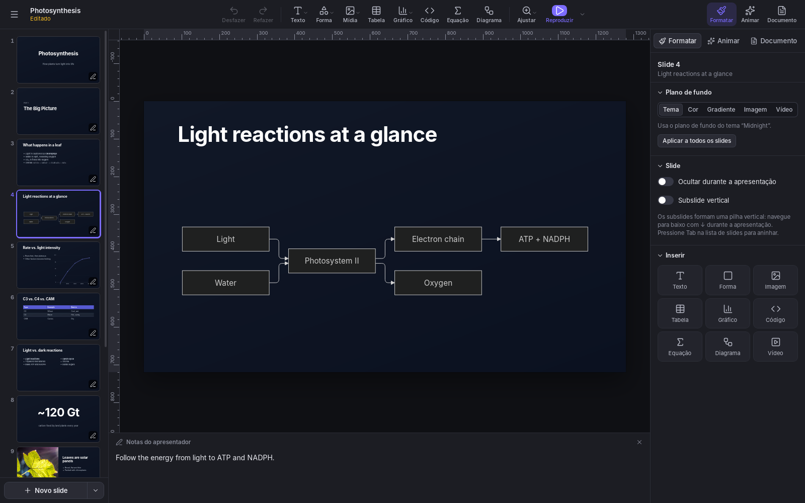
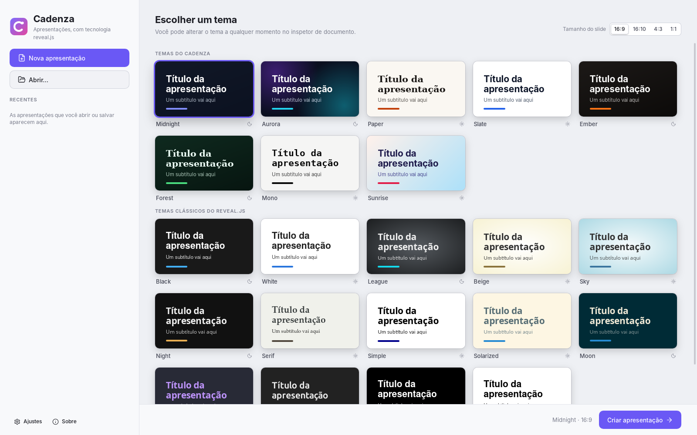
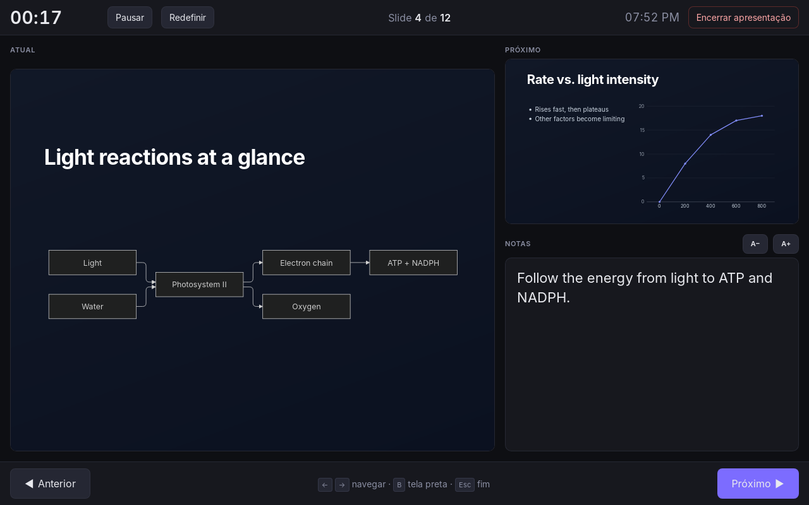

Cadenza
O Cadenza é um aplicativo de apresentações para Linux e Windows, construído sobre o reveal.js. Você monta os slides num editor visual, com layouts prontos, temas, gráficos, diagramas e equações, apresenta em tela cheia com uma tela do apresentador e exporta o resultado como página web ou PDF. Não é preciso escrever HTML ou JavaScript para preparar uma apresentação.
O trabalho fica em arquivos locais. Uma apresentação pode levar consigo as imagens, os vídeos importados e as fontes incorporadas, sem exigir uma conta ou o envio do material para um serviço de nuvem. O aplicativo é software livre, desenvolvido em Rust e tecnologias web com Tauri, sob a licença MIT.
Essa combinação é especialmente útil em aulas, seminários e apresentações técnicas. Dá para explicar um algoritmo destacando suas linhas, corrigir uma fórmula pelo código LaTeX, alterar um fluxograma em Mermaid e publicar os slides no próprio site. Também há os recursos de uma apresentação convencional: texto, fotografias, tabelas, transições e notas de fala.

Baixar
Baixe a versão mais recente na página de versões do GitHub, que também mostra as novidades de cada versão. Escolha o arquivo do seu sistema (x.y.z é o número da versão):
| Sistema | Arquivo |
|---|---|
| Windows 10 e 11 | Cadenza_x.y.z_x64-setup.exe (instalador) ou Cadenza_x.y.z_x64_en-US.msi (pacote MSI) |
| Ubuntu, Debian e derivados | Cadenza_x.y.z_amd64.deb |
| Fedora e openSUSE | Cadenza-x.y.z-1.x86_64.rpm |
| Linux (AppImage) | Cadenza_x.y.z_amd64.AppImage |
Não há mais versão para macOS. As versões 0.2.0 a 0.3.2 tinham uma, mas não era possível testá-la regularmente num Mac.
Instalação
Os pacotes incluem o aplicativo; o procedimento muda conforme o sistema. No Linux, escolha uma das alternativas abaixo, de acordo com a distribuição ou o formato baixado.
- Windows: execute o instalador. Ele instala o Microsoft WebView2 se for preciso.
- Linux: instale o pacote pelo terminal, na pasta onde ele foi baixado, trocando x.y.z pela versão baixada. O AppImage não precisa de instalação: basta torná-lo executável e abri-lo.
sudo apt install ./Cadenza_x.y.z_amd64.deb # Ubuntu, Debian
sudo dnf install ./Cadenza-x.y.z-1.x86_64.rpm # Fedora
sudo zypper install ./Cadenza-x.y.z-1.x86_64.rpm # openSUSE
chmod +x Cadenza_x.y.z_amd64.AppImage # AppImageAs versões para Linux e Windows são de 64 bits (x86-64). Os pacotes .deb e .rpm precisam do WebKitGTK 4.1, presente no Ubuntu 22.04, no Debian 12, no Fedora 37 e em versões mais recentes.
Na primeira vez que você abrir
Os instaladores ainda não têm assinatura digital, então, no Windows, o SmartScreen pode avisar que o aplicativo não é reconhecido. Clique em Mais informações > Executar assim mesmo.
Atualização
A partir da versão 0.3.3, o Cadenza se mantém atualizado. Ao abrir, ele procura uma versão mais recente e oferece baixá-la e instalá-la com o mesmo tipo de pacote; no Linux, as atualizações dos pacotes .deb e .rpm pedem sua senha. Depois, o aplicativo reinicia e reabre as apresentações que estavam abertas, inclusive com as alterações não salvas. As versões anteriores não fazem isso, então instale a 0.3.3 ou uma mais recente manualmente uma vez.
Recursos
O editor reúne a preparação do conteúdo e a apresentação ao vivo. Você pode começar com um layout, ajustar os objetos livremente e manter no mesmo arquivo o material visual e as notas que usará para falar.
Edição
Há 12 layouts, incluindo título, seção, duas colunas, citação, número em destaque e código. Eles oferecem um ponto de partida, e os objetos podem ser movidos, redimensionados, duplicados, alinhados e bloqueados. Réguas, guias arrastáveis, guias inteligentes e grade com encaixe ajudam a manter o alinhamento entre elementos.
A formatação pode valer para uma caixa de texto inteira ou apenas para o trecho selecionado: fonte, tamanho, cor, negrito, itálico e sublinhado. Tabelas têm células editáveis e permitem ajustar o número de linhas e colunas. Desfazer, refazer e a paleta de comandos (Ctrl+K) ajudam nas operações do dia a dia.
Gráficos e mapas
Os gráficos são editados numa grade de dados e desenhados em SVG, que mantém a nitidez ao mudar de tamanho. São 19 tipos: colunas, colunas empilhadas, barras, barras empilhadas, linhas, pontos, área, área empilhada, streamgraph, pizza, rosca, treemap, parlamento, dispersão, mapa de calor, candlestick, Sankey, rede e mapa geográfico.
Isso permite mostrar desde uma comparação entre categorias até fluxos entre entidades ou a distribuição de assentos num parlamento. Sankey e rede usam relações de origem, destino e valor. Nos mapas, você escolhe o mundo, um continente ou as divisões administrativas de um país e associa valores às regiões por nome ou código. Os limites geográficos vêm do Natural Earth.
Também dá para começar pelos dados: cole células de uma planilha ou abra um arquivo CSV, e o Cadenza mostra uma prévia de cada gráfico que os dados permitem. Ele identifica as colunas de rótulos, valores, grupos e barras de erro, e você pode mudar o papel de cada coluna. Para figuras científicas, os gráficos também aceitam barras de erro (± um valor, valores separados abaixo e acima, ou extremos inferior e superior), limites próprios para o eixo de valores, títulos dos eixos, linhas de referência e formatos de ponto.
Durante a apresentação, um gráfico pode aparecer por etapas: uma série de cada vez, uma fatia de pizza ou um partido no gráfico de parlamento. É uma forma de acompanhar a explicação sem colocar todos os dados na tela de uma só vez.
Código, equações e diagramas
Blocos de código têm destaque de sintaxe, numeração de linhas e realce de linhas passo a passo. Numa aula de programação, por exemplo, você pode manter o mesmo trecho no slide e conduzir a atenção para partes diferentes a cada avanço.
As equações usam LaTeX com KaTeX, como objetos separados ou dentro do texto, como em $e^{i\pi}+1=0$. A expressão continua editável pelo seu código. O suporte é o do KaTeX, voltado à composição matemática; não se trata de um compilador de documentos LaTeX completos.
Os diagramas usam Mermaid: fluxogramas, sequências, linhas do tempo, mapas mentais e outros formatos. Alterar um rótulo ou uma relação significa editar a descrição do diagrama e renderizá-lo novamente. Isso facilita revisar uma explicação técnica sem reconstruir uma imagem em outro programa.
Design
O Cadenza inclui 22 temas: oito próprios e os temas clássicos do reveal.js. O construtor de temas permite definir a aparência, reutilizá-la em outras apresentações e compartilhar um arquivo .cadenza-theme, com suas fontes incorporadas. Também é possível exportar o tema como CSS do reveal.js ou acrescentar CSS específico a uma apresentação.
As animações incluem entradas por etapas, transições e Magic Move, baseado no auto-animate do reveal.js. Há ainda trajetórias de movimento desenhadas no slide, com segmentos retos ou curvas. Esses recursos permitem revelar uma explicação aos poucos ou acompanhar a mudança de posição de um objeto.

Mídia
Você pode inserir imagens e vídeos do computador ou buscar material na biblioteca de mídia. Openverse e Wikimedia Commons dispensam chave de API; Pexels, Pixabay e GIPHY usam chaves configuradas no aplicativo. As condições de uso variam conforme a fonte e o arquivo: confira a licença e mantenha os créditos necessários.
A busca também aceita um endereço de imagem, uma página de arquivo do Wikimedia Commons ou da Wikipedia, ou uma página web com imagem de prévia. No caso dos arquivos do Wikimedia, as informações de autoria e licença acompanham a importação. Para YouTube e Vimeo, é possível colar o link ou navegar pelo serviço e inserir o vídeo escolhido. Esses vídeos continuam dependendo do serviço e da conexão; não viram arquivos locais ao salvar a apresentação.
O recurso Câmera ao vivo coloca a imagem da câmera num slide, em formato retangular ou circular, com opção de espelhamento. Ele funciona na janela do público durante a apresentação no Cadenza.
Apresentação e compartilhamento
A tela do apresentador reúne slide atual, próximo slide, notas, cronômetro e relógio. Com dois monitores, você pode manter esses controles numa tela e mostrar os slides ao público na outra. Com uma só tela, a tecla X alterna entre a apresentação e a tela do apresentador. Numa videochamada, compartilhe apenas a janela da apresentação para manter as notas fora da transmissão.
O teleprompter usa as notas do slide atual e acompanha a troca de slides. Você pode movê-lo, redimensioná-lo, pausar a rolagem e ajustar velocidade, fonte, tamanho do texto, espaçamento, cores e transparência. Há espelhamento para uso com vidro de teleprompter e uma linha de leitura. Ele pertence à tela do apresentador e não é desenhado na janela do público.
Além da sequência horizontal, há subslides verticais: um tópico pode ter uma sequência de aprofundamento abaixo dele. Slides ocultos permitem manter material de apoio no arquivo, e o avanço automático atende apresentações que devem seguir sem intervenção. Quem começa pelo texto pode importar Markdown no estilo do reveal.js e continuar a edição visual.

Idiomas
A interface está disponível em alemão, árabe, bengali, chinês (simplificado), espanhol, francês, hindi, holandês, inglês, italiano, japonês, polonês, português, português do Brasil, russo e turco. O inglês é o idioma padrão; para trocar, use Ajustes > Idioma.
Cadenza, Keynote, PowerPoint e Google Slides
Os quatro aplicativos atendem ao trabalho básico de montar e apresentar slides. As diferenças ficam mais claras ao considerar onde o arquivo vive, como o conteúdo técnico é editado, como a apresentação será distribuída e se outras pessoas precisam trabalhar nela ao mesmo tempo.
A comparação abaixo foi revisada em 15 de outubro de 2026. Ela considera o Cadenza 0.3.3, o Keynote para Mac, o PowerPoint para desktop do Microsoft 365 e o Google Slides no navegador; os editores web e móveis de cada família aparecem numa linha própria. Sim indica suporte integrado; -- indica que não há suporte nativo documentado para aquela função nesse recorte. Condições de plano, plataforma, serviço ou complemento são indicadas nas células. Isso não impede reproduzir um resultado com imagens, ferramentas externas ou extensões.
| Recurso | Cadenza | Keynote | PowerPoint | Google Slides |
|---|---|---|---|---|
| Texto, imagens, formas e tabelas | Sim | Sim | Sim | Sim |
| Temas e layouts | Sim | Sim | Sim | Sim |
| Gráficos com dados editáveis | Sim; 19 tipos | Sim | Sim | Sim; dados no Sheets |
| Transições e animação de objetos | Sim | Sim | Sim | Sim |
| Notas e tela do apresentador | Sim | Sim | Sim | Sim |
| Sim; impressão | Sim | Sim | Sim | |
| Aplicativo de desktop | Linux e Windows | macOS | Windows e macOS | Editor no navegador |
| Edição offline | Sim | Sim | Sim; após instalação e ativação1 | Sim; exige configuração prévia1 |
| Software livre | Sim; MIT | --; proprietário | --; proprietário | --; proprietário |
| Equações a partir de LaTeX | Sim; KaTeX | Sim; LaTeX e MathML2 | --; editor com UnicodeMath2 | --; por complemento, como MathType2 |
| Código com sintaxe colorida e realce de linhas por etapas | Sim | -- | -- | -- |
| Mermaid com código editável | Sim | -- | -- | -- |
| Importação de Markdown no estilo reveal.js | Sim | -- | -- | -- |
| Subslides com navegação vertical | Sim | -- | -- | -- |
| CSS próprio por apresentação | Sim | -- | -- | -- |
| Teleprompter com rolagem automática | Sim; durante a apresentação | --; notas com leitura manual | Na gravação no Windows3 | No Google Vids, para gravação3 |
| Câmera ao vivo dentro do slide | Sim; ao apresentar no app | Sim | Sim; Cameo | Speaker spotlight; contas elegíveis |
| HTML para hospedar por conta própria | Sim; arquivo único ou pasta | Sim; exportação HTML | --; sem exportação HTML direta | --; publicação hospedada pelo Google4 |
| Abrir e exportar PPTX | -- | Sim; conversão | Sim; formato nativo | Sim; importação/exportação |
| Edição simultânea por várias pessoas | -- | Sim; iCloud5 | Sim; OneDrive/SharePoint5 | Sim5 |
| Comentários de revisão | -- | Sim | Sim | Sim |
| Editor web ou móvel | -- | iCloud; iPhone e iPad | Web; Android e iOS | Web; Android e iOS |
| Gravar a apresentação em vídeo | -- | Sim | Sim | Via Google Vids; contas elegíveis |
As funções gerais e a disponibilidade por plataforma estão documentadas nos guias do Keynote, do PowerPoint e do Google Slides. Para abrir arquivos PowerPoint no Keynote e exportá-los novamente, veja também os formatos aceitos pela Apple.
O que o Cadenza ainda não oferece
As limitações de formato e colaboração pesam na escolha tanto quanto os recursos de edição. Na versão 0.3.3, não há importação ou exportação de PPTX, coedição em tempo real, comentários de revisão ou histórico compartilhado na nuvem. Enviar um .cadenza a outra pessoa permite que ela trabalhe numa cópia; isso não equivale a editar o mesmo documento em conjunto.
Também não há editor web ou aplicativo móvel, nem gravação integrada da apresentação em vídeo. O HTML exportado pode ser apresentado num navegador, mas não oferece o editor do Cadenza. Para gravar uma aula, é necessário usar uma ferramenta de captura de tela. A câmera ao vivo e o teleprompter do aplicativo não constituem um gravador.
Privacidade
O Cadenza não exige conta para criar, editar, salvar ou apresentar arquivos locais. Os recursos on-line, como download de fontes, busca de mídia e reprodução de vídeos externos, acessam os respectivos serviços quando usados. A única exceção é a busca por atualizações: ao abrir, o Cadenza baixa do GitHub um pequeno arquivo com o número da versão mais recente, sem enviar nada sobre você ou suas apresentações. Ela pode ser desligada em Ajustes > Atualizações.
As chaves de API ficam no cofre de senhas do sistema: Secret Service no Linux e Gerenciador de Credenciais no Windows. Elas não são gravadas nas apresentações.
Arquivos
O arquivo de edição e os formatos de distribuição têm funções diferentes. Guarde o .cadenza para continuar o trabalho; escolha HTML para distribuir uma apresentação navegável e PDF para uma cópia estática.
.cadenza: uma apresentação, guardada como um arquivo zip com odeck.jsone as mídias e fontes que ela usa..cadenza-theme: um tema criado no construtor de temas (JSON, com as fontes incluídas).- HTML em um arquivo: reúne a apresentação e seus recursos incorporados num
.html, que pode ser aberto num navegador sem instalar o Cadenza. Referências a serviços externos ainda dependem de rede. - HTML em uma pasta: separa a página e os recursos, para publicação num servidor próprio ou serviço de hospedagem estática.
- PDF: usa a impressão do sistema para produzir páginas estáticas. Vídeos, transições e interações não são preservados como recursos executáveis.
O HTML mantém a navegação e os recursos de apresentação compatíveis com o navegador. Ele não substitui o .cadenza como formato de edição, e não há importação de um HTML arbitrário para reconstruir o projeto. Para material com vídeos ou fontes específicas, vale conferir o resultado no computador e no navegador em que será apresentado.
Código-fonte
O código do Cadenza está no GitHub, com as instruções para compilar a partir do código-fonte, o histórico de mudanças e o guia de contribuição. Relatos de erro, sugestões e traduções são bem-vindos nas issues.
O Cadenza é distribuído sob a licença MIT. Ele inclui reveal.js, KaTeX, Mermaid, highlight.js, Preact, htm e ícones Lucide, cada um sob a própria licença.
As descrições do Cadenza nesta página seguem o README e o histórico da versão 0.3.3. As referências abaixo detalham as condições da comparação.
-
A Microsoft documenta o uso offline após instalação e ativação, com reconexão periódica para o Microsoft 365. O Google Slides exige preparação do acesso offline, incluindo Chrome ou Edge e a extensão Google Docs Offline no computador. ↩ ↩2
-
O Keynote aceita LaTeX e MathML. A Microsoft distingue o LaTeX do Word do UnicodeMath disponível nos demais aplicativos do Office. No Google Slides, MathType é um complemento de terceiros, com condições próprias de assinatura. ↩ ↩2 ↩3
-
A Microsoft descreve a rolagem automática no modo Teleprompter da gravação no Windows. O estúdio do Google Vids também oferece rolagem, mas é outro aplicativo e não o modo de apresentação ao vivo do Slides; a disponibilidade dos serviços depende da conta. ↩ ↩2
-
O Publish to the web do Google publica uma apresentação no serviço ou fornece sua incorporação numa página. O PowerPoint também pode ser incorporado via OneDrive. Esses caminhos dependem da hospedagem do fornecedor; não equivalem a exportar a apresentação completa para um servidor próprio. ↩
-
Veja a colaboração no Keynote com iCloud, a coautoria, os comentários e o histórico do Microsoft 365 e os recursos de compartilhamento e histórico do Slides. Sincronização de arquivos e recuperação local não equivalem a coedição. ↩ ↩2 ↩3